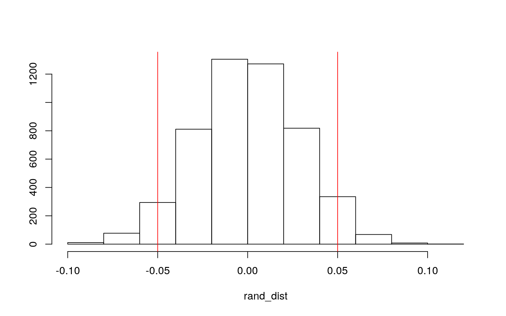

The data set being analyzed here is called Participation; it contains 872 observations with a total of 8 variables, to measure the work force participation in Switzerland. The “X1” variable gives a number to each individual whose data was collected. The “lfp” variable shows labor force participation status with either “yes” or “no”. The “lnnlinc” variable gives the log of the non-labor income. The “age” variable gives the age of the individual in years divided by 10. The “educ” variable describes the amount of formal education in years. The “nyc” variable gives the number of young children (below the age of 7 years), while the “noc” variable gives the number of older children (7 years or older). Finally, the “foreigner” variable states whether the individual is foreign with “yes” or “no”.
Participation <- read_csv("Participation.csv")
read_csv("Participation.csv")## # A tibble: 872 x 8
## X1 lfp lnnlinc age educ nyc noc foreign
## <dbl> <chr> <dbl> <dbl> <dbl> <dbl> <dbl> <chr>
## 1 1 no 10.8 3 8 1 1 no
## 2 2 yes 10.5 4.5 8 0 1 no
## 3 3 no 11.0 4.6 9 0 0 no
## 4 4 no 11.1 3.1 11 2 0 no
## 5 5 no 11.1 4.4 12 0 2 no
## 6 6 yes 11.0 4.2 12 0 1 no
## 7 7 no 11.5 5.1 8 0 0 no
## 8 8 yes 10.5 3.2 8 0 2 no
## 9 9 no 10.6 3.9 12 0 0 no
## 10 10 no 10.5 4.3 11 0 2 no
## # … with 862 more rowshead(Participation)## # A tibble: 6 x 8
## X1 lfp lnnlinc age educ nyc noc foreign
## <dbl> <chr> <dbl> <dbl> <dbl> <dbl> <dbl> <chr>
## 1 1 no 10.8 3 8 1 1 no
## 2 2 yes 10.5 4.5 8 0 1 no
## 3 3 no 11.0 4.6 9 0 0 no
## 4 4 no 11.1 3.1 11 2 0 no
## 5 5 no 11.1 4.4 12 0 2 no
## 6 6 yes 11.0 4.2 12 0 1 noA MANOVA test was run to assess whether a mean difference exists among individual age, education, and log non-labor income across those who participate in the Swiss workforce.
man1<-manova(cbind(age, educ, lnnlinc)~lfp, data=Participation)
summary(man1)## Df Pillai approx F num Df den Df Pr(>F)
## lfp 1 0.042322 12.786 3 868 3.507e-08 ***
## Residuals 870
## ---
## Signif. codes: 0 '***' 0.001 '**' 0.01 '*' 0.05 '.' 0.1
' ' 1Overall, the MANOVA test resulted in significance, meaning significant differences exist between those who participate in the Swiss work force on the basis of either mean age, education, non-labor income, or a combination of these.
Because it is unclear what causes these differences, follow up univariate ANOVAs must be run on each of the individual variables, along with post-hoc t tests.
summary.aov(man1)## Response age :
## Df Sum Sq Mean Sq F value Pr(>F)
## lfp 1 8.26 8.2635 7.4772 0.006375 **
## Residuals 870 961.49 1.1052
## ---
## Signif. codes: 0 '***' 0.001 '**' 0.01 '*' 0.05 '.' 0.1
' ' 1
##
## Response educ :
## Df Sum Sq Mean Sq F value Pr(>F)
## lfp 1 84.4 84.446 9.2469 0.00243 **
## Residuals 870 7945.2 9.132
## ---
## Signif. codes: 0 '***' 0.001 '**' 0.01 '*' 0.05 '.' 0.1
' ' 1
##
## Response lnnlinc :
## Df Sum Sq Mean Sq F value Pr(>F)
## lfp 1 4.43 4.4298 26.807 2.794e-07 ***
## Residuals 870 143.77 0.1653
## ---
## Signif. codes: 0 '***' 0.001 '**' 0.01 '*' 0.05 '.' 0.1
' ' 1pairwise.t.test(Participation$age, Participation$lfp, p.adj="none")##
## Pairwise comparisons using t tests with pooled SD
##
## data: Participation$age and Participation$lfp
##
## no
## yes 0.0064
##
## P value adjustment method: nonepairwise.t.test(Participation$educ, Participation$lfp, p.adj="none")##
## Pairwise comparisons using t tests with pooled SD
##
## data: Participation$educ and Participation$lfp
##
## no
## yes 0.0024
##
## P value adjustment method: nonepairwise.t.test(Participation$lnnlinc, Participation$lfp, p.adj="none")##
## Pairwise comparisons using t tests with pooled SD
##
## data: Participation$lnnlinc and Participation$lfp
##
## no
## yes 2.8e-07
##
## P value adjustment method: noneAll 3 univariate ANOVAs were significant, using the Bonferroni method. 6 post-hoc t tests were then performed to assess which participant groups differ in age, education, and log non-labor income. The only tests that resulted in significance were those assessing the log non-labor income between those who participate in the workforce and those who don’t.
The probability of at least one type I error occurring within the 6 t tests, mentioned above, was calculated to be 0.1382.
Type1ErrorCount <- replicate(5000, {
pvals <- NULL
for(i in 1:3){
samp1 <- rnorm(20, mean=0)
samp2 <- rnorm(20, mean=0)
pvals[i] <- t.test(samp1,samp2, var.equal = T)$p.val
}
sum(pvals<.05)
})
mean(Type1ErrorCount>0) ## [1] 0.1436As far as MANOVA assumptions, a few tests were run to test whether they were met.
library(rstatix)
group <- Participation$lfp
DVs <- Participation %>% select(educ,age,lnnlinc) #null: multivariate met
sapply(split(DVs,group), mshapiro_test)## no yes
## statistic 0.9851436 0.8275382
## p.value 9.638927e-05 1.932736e-20box_m(DVs, group) #null: homogeneity met ## # A tibble: 1 x 4
## statistic p.value parameter method
## <dbl> <dbl> <dbl> <chr>
## 1 48.6 0.00000000880 6 Box's M-test for Homogeneity of
Covariance MatricesWhen checking the multivariate assumption for a subset of the numeric predictor varibales (age, educ, lnnlinc), a p-value far below alpha is obtained. This indicates a rejection of the null hypothesis, which states the multivariate assumption is met. Additionally, a Box’s M test was run to assess homogeneity of covariance. This adjusts the data to meet assumptions. A significant p-value was also obtained from this test, indicating a rejection of the null, which states the homogeneity assumption is met.
Assessing other assumptions and whether they were likely to have been met, it is likely that the sample taken was random and that each observation was independent of one another.
It is likely the rest of the assumptions failed to have been met. As seen above, multivariate normality and homogeneity were not achieved. Additionally, when assessing the DVs (age, education, and log non-labor income) some sort of correlation is assumed to exist between age and education level and potentially even education level and log non-labor income. These relationships are likely linear, however, so that assumption can be considered “met”.
Overall this indicates that the data is not ideal in regards of the tests we are attempting to run on it. Any results/conclusions obtained need to be accepted with caution. To combat this issue, randomization tests can next be run.
A randomization test was run to determine the mean difference in log non-labor income between those involved in the Swiss workforce and those who aren’t. The null hypothesis states the mean log non-labor income is the same for those involved in the Swiss workforce and those who aren’t. The alternative hypothesis states the mean log non-labor income is not the same for those involved in the Swiss workforce and those who aren’t. A plot of the null distribution was also generated with intercept lines at the test statistic, 0.05/-0.05. This value was obtained through multiple permutation tests.
MeanD <- data.frame(condition=Participation$lfp, lognon=Participation$lnnlinc)
head(MeanD)## condition lognon
## 1 no 10.78750
## 2 yes 10.52425
## 3 no 10.96858
## 4 no 11.10500
## 5 no 11.10847
## 6 yes 11.02825MeanD%>%group_by(condition)%>%
summarize(means=mean(lognon))%>%summarize(`mean_diff`=diff(means))## # A tibble: 1 x 1
## mean_diff
## <dbl>
## 1 -0.143head(perm1<-data.frame(condition=Participation$lfp,lognon=sample(Participation$lnnlinc)))## condition lognon
## 1 no 9.999619
## 2 yes 11.304028
## 3 no 10.517282
## 4 no 10.619115
## 5 no 10.421497
## 6 yes 10.605672perm1%>%group_by(condition)%>%
summarize(means=mean(lognon))%>%summarize(`mean_diff`=diff(means))## # A tibble: 1 x 1
## mean_diff
## <dbl>
## 1 -0.00415rand_dist<-vector() #create vector to hold diffs under null hypothesis
for(i in 1:5000){
new<-data.frame(lognon=sample(Participation$lnnlinc),condition=Participation$lfp)
rand_dist[i]<-mean(new[new$condition=="yes",]$lognon)-
mean(new[new$condition=="no",]$lognon)}
mean(rand_dist>0.050 | rand_dist < -0.050)## [1] 0.072{hist(rand_dist,main="",ylab=""); abline(v = c(-0.050, 0.050),col="red")} A p-value of 0.0784 was obtained after running 5000 permutations on the sample, meaning we fail to reject the null hypothesis. Because of this, we can say that the mean log non-labor income is the same for those involved in the Swiss workforce and those who aren’t. To go one step further, this may also mean that the log non-labor income variable is not an effective predictor of Swiss work force participation status.
To assess additional relationships within this data set, a linear regression model was built predicting amount of education from age and non-labor income; their interaction was also assessed. Both numeric variables were mean centered. These variables were utilized, as the other numeric variables are discrete and don’t result in a linear regression model that is as effective.
Linearity, homoskedasticity, and normality assumptions were checked.
Participation$age_c <- Participation$age - mean(Participation$age, na.rm = T)
Participation$lnnlinc_c <- Participation$lnnlinc - mean(Participation$lnnlinc, na.rm = T)
linreg <- lm(educ~age_c*lnnlinc_c, data =Participation)
summary(linreg)##
## Call:
## lm(formula = educ ~ age_c * lnnlinc_c, data =
Participation)
##
## Residuals:
## Min 1Q Median 3Q Max
## -8.5075 -1.5516 0.0131 1.8025 10.0760
##
## Coefficients:
## Estimate Std. Error t value Pr(>|t|)
## (Intercept) 9.30983 0.09502 97.977 < 2e-16 ***
## age_c -0.51800 0.09205 -5.628 2.47e-08 ***
## lnnlinc_c 2.86137 0.25180 11.364 < 2e-16 ***
## age_c:lnnlinc_c -0.92573 0.21092 -4.389 1.28e-05 ***
## ---
## Signif. codes: 0 '***' 0.001 '**' 0.01 '*' 0.05 '.' 0.1
' ' 1
##
## Residual standard error: 2.806 on 868 degrees of freedom
## Multiple R-squared: 0.1489, Adjusted R-squared: 0.146
## F-statistic: 50.64 on 3 and 868 DF, p-value: < 2.2e-16resid<-linreg$residuals
fitvals<-linreg$fitted.values
ggplot()+geom_point(aes(fitvals,resid))+geom_hline(yintercept=0, color='red') #linearity and homoskedasticityggplot()+geom_histogram(aes(resid), bins=20) #normalityggplot()+geom_qq(aes(sample=resid))+geom_qq_line(aes(sample=resid)) #normality For the most part, the normality assumption appears to have been met. There is a slight skew to the right, however, we will move forward. As for homoskedasticity and linearity, a pattern appears to exist, which allows us to conclude that these assumptions have not been met.
According to the model using mean-centered variables, the mean predicted amount of education obtained for middle-aged individuals that have an average log non-labor income is approximately 9.31 years. For individual’s with an average log non-labor income, every 1 year (10 actual years) increase in the their age past the mean age is associated with a 0.52 decrease in the amount of formal education they’ve obtained. For every 1 unit increase in the log non-labor income of a middle-aged individual, the amount of education obtained is likely to increase by 2.86 years. For every 1 year (10 actual years) increase in age past the mean age, along with a 1 unit increase past the mean log non-labor income, the amount of formal education obtained is likely to decrease by 0.93 years.
Only 14.6% of the variation in the outcome is explained by the model. The adjusted R-squared was used, as this value is more conservative and accounts for each explanatory variable.
These results were recomputed using robust standard errors, as the homoskedasticity assumption was not met.
library(lmtest)
library(sandwich)
coeftest(linreg, vcov = vcovHC(linreg))##
## t test of coefficients:
##
## Estimate Std. Error t value Pr(>|t|)
## (Intercept) 9.309827 0.095481 97.5049 < 2.2e-16 ***
## age_c -0.517999 0.092363 -5.6083 2.747e-08 ***
## lnnlinc_c 2.861370 0.319600 8.9530 < 2.2e-16 ***
## age_c:lnnlinc_c -0.925731 0.347128 -2.6668 0.0078 **
## ---
## Signif. codes: 0 '***' 0.001 '**' 0.01 '*' 0.05 '.' 0.1
' ' 1As before, all relationships resulted in significant results, indicating a linear relationship between amount of formal education obtained, mean age, and mean log non-labor income that is not due to chance. The coefficients for each variable and interaction changed slightly but only beginning in the thousandths place, so not by much.
The regression, with interaction, was plotted and is included below.
Participation%>%ggplot(aes(educ,age_c*lnnlinc_c, color = age_c))+geom_point()+geom_smooth(method = 'lm',se=F)Another method that can be utilized when the assumptions have not been met is the use of bootstrapped standard errors. The same regression model from above was run using this method of resampling observations, and the SEs were compared.
Par_dat<- sample_frac(Participation, replace=T)
samp_distn<-replicate(5000, {
Par_dat<-Par_dat<-Participation[sample(nrow(Participation),replace=TRUE),]
linreg1<-lm(educ ~ age_c * lnnlinc_c, data=Par_dat)
coef(linreg1)
})
samp_distn %>% t %>% as.data.frame %>% summarize_all(sd)## (Intercept) age_c lnnlinc_c age_c:lnnlinc_c
## 1 0.09591311 0.09429033 0.3009294 0.3041727coeftest(linreg)##
## t test of coefficients:
##
## Estimate Std. Error t value Pr(>|t|)
## (Intercept) 9.309827 0.095021 97.9770 < 2.2e-16 ***
## age_c -0.517999 0.092047 -5.6275 2.467e-08 ***
## lnnlinc_c 2.861370 0.251801 11.3636 < 2.2e-16 ***
## age_c:lnnlinc_c -0.925731 0.210919 -4.3890 1.279e-05 ***
## ---
## Signif. codes: 0 '***' 0.001 '**' 0.01 '*' 0.05 '.' 0.1
' ' 1coeftest(linreg, vcov = vcovHC(linreg))[,1:2]## Estimate Std. Error
## (Intercept) 9.3098271 0.09548058
## age_c -0.5179991 0.09236349
## lnnlinc_c 2.8613703 0.31960012
## age_c:lnnlinc_c -0.9257306 0.34712841When comparing the original SEs with the robust and bootstrapped SEs, slight deviations were observed in each, however, nothing drastic. For the intercept, the original SE was 0.095, the robust SE was 0.095, and the bootstrapped SE was 0.096. For a middle-aged individual, the original SE was 0.092, the robust SE was 0.092, and the bootstrapped SE was 0.092. For an individual with an average log non-labor income, the original SE was 0.252, the robust SE was 0.320, and the bootstrapped SE was 0.298. For the interaction between mean age and mean log non-labor income, the original SE was 0.211, the robust SE was 0.347, and the bootstrapped SE was 0.312. Because these values remain fairly constant, we can say that significant overfitting of the model is not occurring, despite important assumptions not having been met initially.
To assess additional relationships within this data set, a logistic regression model was generated predicting work force participation status from number of older children and number of younger children.
Participation1 <- Participation %>% mutate(status=ifelse(lfp=="yes",1,0))
head(Participation1)## # A tibble: 6 x 11
## X1 lfp lnnlinc age educ nyc noc foreign age_c lnnlinc_c
status
## <dbl> <chr> <dbl> <dbl> <dbl> <dbl> <dbl> <chr> <dbl>
<dbl> <dbl>
## 1 1 no 10.8 3 8 1 1 no -0.996 0.102 0
## 2 2 yes 10.5 4.5 8 0 1 no 0.504 -0.161 1
## 3 3 no 11.0 4.6 9 0 0 no 0.604 0.283 0
## 4 4 no 11.1 3.1 11 2 0 no -0.896 0.419 0
## 5 5 no 11.1 4.4 12 0 2 no 0.404 0.423 0
## 6 6 yes 11.0 4.2 12 0 1 no 0.204 0.343 1logreg <- glm(status~noc+nyc, data=Participation1, family="binomial")
coeftest(logreg)##
## z test of coefficients:
##
## Estimate Std. Error z value Pr(>|z|)
## (Intercept) -0.065518 0.105093 -0.6234 0.5330
## noc 0.076814 0.064790 1.1856 0.2358
## nyc -0.590567 0.128603 -4.5922 4.386e-06 ***
## ---
## Signif. codes: 0 '***' 0.001 '**' 0.01 '*' 0.05 '.' 0.1
' ' 1For an individual with no children, the log-odds of them participating in the Swiss workforce is -0.065. For an individual with no younger children, every 1 unit increase in the number of older children is associated with a 0.077 increase in the log-odds that they participate in the Swiss workforce. For an individual with no older children, every 1 unit increase in the number of younger children is associated with a 0.59 decrease in the log-odds that they participate in the Swiss workforce.
A confusion matrix was generated for this model and the classification diagnostics were calculated.
class_diag<-function(probs,truth){
tab<-table(factor(probs>.5,levels=c("FALSE","TRUE")),truth)
acc=sum(diag(tab))/sum(tab)
sens=tab[2,2]/colSums(tab)[2]
spec=tab[1,1]/colSums(tab)[1]
ppv=tab[2,2]/rowSums(tab)[2]
if(is.numeric(truth)==FALSE & is.logical(truth)==FALSE) truth<-as.numeric(truth)-1
#CALCULATE EXACT AUC
ord<-order(probs, decreasing=TRUE)
probs <- probs[ord]; truth <- truth[ord]
TPR=cumsum(truth)/max(1,sum(truth))
FPR=cumsum(!truth)/max(1,sum(!truth))
dup<-c(probs[-1]>=probs[-length(probs)], FALSE)
TPR<-c(0,TPR[!dup],1); FPR<-c(0,FPR[!dup],1)
n <- length(TPR)
auc<- sum( ((TPR[-1]+TPR[-n])/2) * (FPR[-1]-FPR[-n]) )
data.frame(acc,sens,spec,ppv,auc)
}predictreg <-predict(logreg, newdata = Participation1, type="response")
truthreg <-Participation1$status
class_diag(predictreg, truthreg)## acc sens spec ppv auc
## 1 0.5607798 0.5137157 0.6008493 0.5228426 0.5909457table(predict=as.numeric(predictreg>.5),truthreg)%>%addmargins## truthreg
## predict 0 1 Sum
## 0 283 195 478
## 1 188 206 394
## Sum 471 401 872After the confusion matrix was generated, the classification diagnostics could be calculated. The accuracy was 0.561, the sensitivity was 0.514, the specificity was 0.601, the precision was 0.523, and the AUC was 0.591. The AUC is quite poor, as any score below 0.6 is considered not to be good. The rest of the metrics are also not very strong, indicating low effectiveness in the ability of the number of children an individual has in predicting their work force status.
A density plot of logit was generated, and a significant amount of overlap was observed between the two different outcomes. This supports the idea that a general prediction trend cannot be relied upon whether logit is greater than or less than 0.
Participation1$logit<-predict(logreg) #save predicted log-odds
Participation1$outcome<-factor(Participation1$lfp,levels=c("yes","no")) #make it a factor for plotting
ggplot(Participation1,aes(logit, fill=outcome))+geom_density(alpha=.3)+
geom_vline(xintercept=0,lty=2)An ROC curve was then generated and the AUC was calculated.
library(plotROC)
ROCplot<-ggplot(Participation1)+geom_roc(aes(d=status,m=noc+nyc), n.cuts=0)
ROCplotcalc_auc(ROCplot)## PANEL group AUC
## 1 1 -1 0.4899058The ROC curve displays a very linear relationship, which makes sense when compared to the logit plot and classification diagnostics. There is not distinct pattern in how workforce participation status is predicted, given the number of older and younger children an individual has. Additionally, the calculated AUC was 0.4899, which is very bad. Overall, all of these metrics point toward poor predictability between workforce participation status and number of older and younger children. This can be taken one step further to support the test above, which only displays significance regarding number of younger children.
A logistic regression was performed on the rest of the numeric variables in the data set.
allreg <- glm(status~lnnlinc+age+educ, data=Participation1, family="binomial")
coeftest(allreg)##
## z test of coefficients:
##
## Estimate Std. Error z value Pr(>|z|)
## (Intercept) 9.616884 2.025057 4.7489 2.045e-06 ***
## lnnlinc -0.800137 0.194049 -4.1234 3.734e-05 ***
## age -0.201707 0.067307 -2.9968 0.002728 **
## educ -0.046359 0.024774 -1.8713 0.061305 .
## ---
## Signif. codes: 0 '***' 0.001 '**' 0.01 '*' 0.05 '.' 0.1
' ' 1The model was fit and in-sample classification diagnostics were calculated below.
proball<-predict(allreg,type="response")
predall<-ifelse(proball>.5,1,0)
table(prediction=predall, truth=Participation1$lfp) %>% addmargins## truth
## prediction no yes Sum
## 0 336 220 556
## 1 135 181 316
## Sum 471 401 872#accuracy
(336+181)/872## [1] 0.5928899#sensitivity
181/401## [1] 0.4513716#specificity
336/471## [1] 0.7133758#precision
181/316## [1] 0.5727848#auc
ROCplotALL<-ggplot(Participation1)+geom_roc(aes(d=status,m=lnnlinc+age+educ), n.cuts=0)
ROCplotALLcalc_auc(ROCplotALL)## PANEL group AUC
## 1 1 -1 0.4213723The accuracy was 0.593, the sensitivity was 0.451, the specificity was 0.713, the precision was 0.573, and the AUC was 0.421. None of these metrics are all that good, especially the AUC. This supports the idea that the other variables are not strong predictors of Swiss work force participation status.
A 10-fold CV was run with the model above and the out-of-sample classification diagnostics were calculated below.
set.seed(1234)
k=10
TenF <-Participation1[sample(nrow(Participation1)),]
folds<-cut(seq(1:nrow(Participation1)),breaks=k,labels=F)
diags<-NULL
for(i in 1:k){
train<-TenF[folds!=i,]
test<-TenF[folds==i,]
truth<-test$status
FoldFit <- glm(status~lnnlinc+age+educ,data=train,family="binomial")
FProb <- predict(FoldFit, newdata=test, type='response')
FDiags<-rbind(diags,class_diag(FProb,truth))
}
summarize_all(FDiags,mean)## acc sens spec ppv auc
## 1 0.6136364 0.4102564 0.7755102 0.5925926 0.5845107The out-of-sample accuracy was 0.614, the sensitivity was 0.410, the specificity was 0.776, the precision was 0.593, and the AUC was 0.585. Compared to the in-sample metrics, the accuracy, specificity, precision, and AUC all increased. The sensitivity was the only metric that decreased. The AUC improved quite a bit, indicating better predictability within the model when using a 10-fold CV, however, an AUC of 0.585 is still very poor.
LASSO was performed on the model above to determine which variables should be retained.
library(glmnet)
Ly<-as.matrix(Participation1$status) #grab response
Lx<-model.matrix(status~lnnlinc+age+educ,data=Participation1)[,-1] #grab predictors
head(Lx)## lnnlinc age educ
## 1 10.78750 3.0 8
## 2 10.52425 4.5 8
## 3 10.96858 4.6 9
## 4 11.10500 3.1 11
## 5 11.10847 4.4 12
## 6 11.02825 4.2 12Lx<-scale(Lx)
set.seed(1234)
CVL <-cv.glmnet(Lx,Ly,family="binomial")
Lasso<-glmnet(Lx,Ly,family="binomial",lambda=CVL$lambda.min)
coef(Lasso)## 4 x 1 sparse Matrix of class "dgCMatrix"
## s0
## (Intercept) -0.1696863
## lnnlinc -0.3214992
## age -0.2012962
## educ -0.1314256LASSO was performed on the model above, however, it did not retain any variables from it. The in and out-of-sample AUCs were very low, which is likely the reason no variables were retained. LASSO penalizes a model for becoming more complex, so it is likely that lowering the predictability from the already poor AUCs caused this.
In conclusion, the predictor variables in this data set were not effective in predicting the Swiss work force participation status. The data set itself was not ideal, as it failed many of the assumptions necessary for the various tests we ran and models we fit. Though this could have contributed to the reduced effectiveness in predictability, even when corrections were made AUCs and other diagnostic classifications did not improve significantly, so this is unlikely. If I were to make any changes when doing this analysis again, I would plan on finding a different data set that meets assumptions to more accurately assess the effectiveness of predictability when different models are fit to the data.